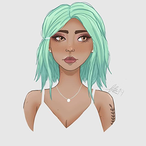
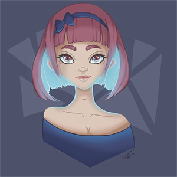

Cornelia
Vem är jag?
Det är alltid svårt att beskriva vem man är utan att det låter som ett personligt brev. Jag skulle se mig själv som en kreativ och påhittig person som även är ganska tävlingsinriktad. Jag vill alltid göra mitt bästa och sedan se om jag kan pusha mig själv lite längre varje gång. Jag är inte den mest utåtriktade människan och tycker ibland att det är väldigt obehagligt att vara "center of attention" bland mycket folk. När man har lärt känna mig har jag dock väldigt svårt för att sluta prata.
Kreativitet
Jag har alltid gillat att vara kreativ och började tidigt att rita i photoshop. Ett tag hade jag en dröm att bli illustratör och började därför studera digital design på högskolan. Det var väldigt viktigt för mig att studera något jag ansåg var roligt då det är mycket lättare för mig att ta emot informationen (och att ta mig igenom studierna). Att jobba med design, logotyper, layouts, UX- och UI-design var väldigt spännande och roligt!
Efter min examen var det lite svårt att veta var jag skulle ta vägen. Det tog några år att fundera ut det men nu har jag äntligen kommit fram till att jag vill djupdyka ner i frontend världen!
Tv- och Datorspel
Tv- och datorspel har alltid varit en stor del av mitt liv. Jag hade turen att bli introducerad till spelvärlden tidigt via min tvillingbror och våra kusiner. I vårt hushåll blev det normalt för oss att spendera tid framför Nintendo 64 konsolen och jag är väldigt tacksam för det. Tyvärr är det många som tycker att spelandet är för grabbar och därför går många tjejer miste om hur fantastiskt det kan vara.
Det som först lockade mig in i spelandet var som sagt min bror och mina kusiner. Vi kunde spendera timmar på Mario Kart och det var så roligt! När jag sedan blev lite äldre fortsatte jag att spela lite mer kreativa spel så som The Sims, Zoo tycoon och liknande där mycket fokus ligger på att bygga upp din värld på ett kreativt sätt - det finns inga gränser (förutom kanske gränssnittet i själva spelet).
I slutet av gymnasiet upptäckte jag E-sport och började spela ett moba (multiplayer online battle arena) som heter League of Legends. Jag har spelat det spelet aktivt i ca 8 år och har även ett lag tillsammans med fyra andra superhärliga tjejer. Vi tävlar i olika turneringar och ligor och det bästa är att få spöa killar som har dålig syn på tjejer som spelar. Vi är bäst!
 The earth without art is just eh.
-Demetri Martin
︵‿︵‿୨♡୧‿︵‿︵